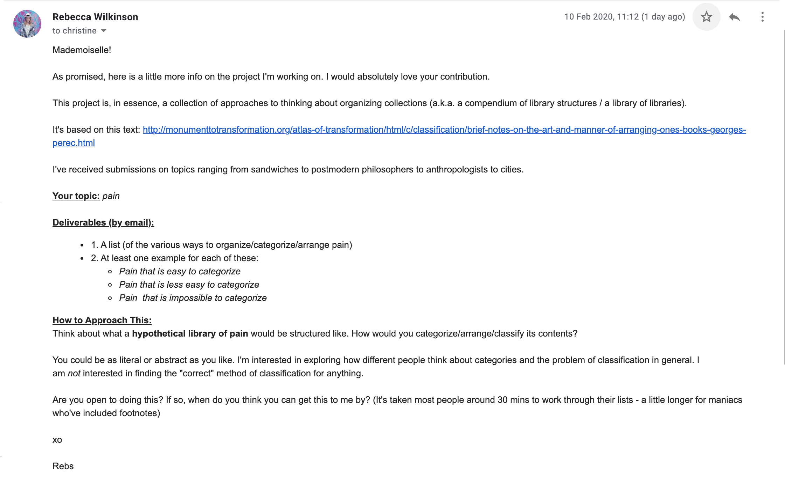

1
Essentially Anonymous (Part 1)
5 × 7 in hardcover book, 184 pages.
Essentially Anonymous is a two-part installation comprised of two books, one that can touched and flipped through and another that is out-of-reach and unknowable. Both books are comprised of expedition photographs collected from the American Museum of Natural History’s digital archives; the untouchable book in the corner is filled with nameless photographs of people taken by researchers during these expeditions while the in-reach book puts the faces of said researchers on display for viewers to examine. These images are interspersed with a poem addressing the conflicts within the act of speaking for others and documenting experiences outside of your own.
2
They Beg to be Touched
Fabric glove sculptures.
3
Save Us All!
24 × 18 in prints.
Save Us All! is an edition of prints that satirizes The Royal Family’s perfectly planned and measured public image to highlight the gossip and tabloid news that keeps the family relevant and present in popular culture. While exaggerating the monarchy’s grandeur by transforming their balcony photo from the Trooping the Colour ceremony into the image of saints, these “holy” portraits are overlayed with loud and brash text—the background is composed of tabloid articles that gossip and speculate about the family’s lives and the foreground consists of the words from God Save the Queen stretched, scaled, and transformed into eye-catching headlines and titles.
4
William and Kate
4.5 (h) × 3.25 (w) × 3.25 (d) in ceramic mug.
5
Harry and Meghan
4 (h) × 5 (w) × 0.5 (d) in plastic saucer.
6
Masters
2.5 (h) × 1.5 (w) × 0.5 (d) in bottle of oil in a 3 (h) × 5 (w) × 2 (d) in metal box.
7
Souvenir from the First Communion
4.5 (h) × 7 (h) × 0.75 (d) in plaque.
8a
Saving Grace (image of website)
Gouache painting (12 × 15 in outer frame, 9.5 × 7.5 in within mat).
Amazing Grace was originally written as a poem in 1772 and over the past 250 or so years it has transformed into the cultural artifact it is today. With its origins rooted in the hopeful salvation of a slavetrader, its reclamation as an anthem of solidarity throughout the Civil Rights Movement and onwards, and its subsequent mainstream popularization through endless covers by established musicians, the Christian hymn has held many meanings throughout its life. The six recordings on the webpage were collected from the Library of Congress’ collection for Amazing Grace.
Experience it here.
8b
Saving Grace (video)
USB stick containing video file inside a 5 (h) × 5 (w) × 2 (d) inmetal shell box.
The USB contains a video documenting the interactive and collaborative experience that is meant to be performed through the Saving Grace webpage.
9
Toronto Archive access card
2 × 3 in paper card.
10
Crown
6 in (circumference) paper crown.
11
Erhu player
12 in (h) plastic battery-powered mechanical doll.
12
Or Best Offer
5 × 7 in printed images.
13a
Exhibition (unlit)
24 × 9.5 in prints (edition of 6).
Exhibition is an edition of prints addressing visibility, the disinterment of people’s pasts, and the question of “who has the right to speak for others?”. The themes and ideas within this work are heavily based upon Susan Sontag’s Regarding the Pain of Others.
13b
Exhibition (lit)
24 × 9.5 in prints (edition of 6) backlit.
Pictured here is the print print mounted onto the lightbox—the full illustration is revealed when there is attention of intent put into the effort of exploring the image by illuminating it.
14
Regarding the Pain of Others by Susan Sontag
5.5 × 8.25 in paperback book, 131 pages.
15
Ways to Classify Pain
18 × 30 in poster.
Through the request by my friend Rebecca (email seen below), I had put together a chart of ways to classify pain.

16
Trophies
8.5 × 11 in page.
These are a collection of quotes collected from local taxidermy business websites. The use of the term trophy is meant to refer to the hunted animals, but when explicit mention of the taxidermy is removed, the phrases begin to take new meaning.
17
Incense
10 in (h) incense sticks.
18
Do Not Print
3 × 4 in flip books.
These flip books consist of negatives collected from the Library of Congress that contain images marked to not be printed. Originally documented by the Farm Security Administration to preserve rural and folk life across the United States, these images have redundantly been marked to never have a second life. The hole-punching in and of itself is such a destructive act for the purposes of an archive, meant to preserve aspects of life and culture. Separate from their original purpose, these images have become something more formally playful—flip books that bounce and guide the ominous black orb created by the hole-punching across the frames.
19
In the Archives of Lesbian Feelings by Ann Cvetkovich
6 × 8 in booklet, 35 pages.
20
Human Artifacts
5 × 7 in paperback book, 384 pages (edition of 6).
Human Artifacts is an anthology of algorithmically-made stories that reveal the ways in which our digital culture can artificially reflect intimate emotional experiences. Trained from ImageNet’s non-human categories, images were bred together to create morphing sequences that somehow still capture human-like figures. Despite the categories not meant to portray humans, the few people that have snuck into other categories of objects and landscapes are able to creep their way in to the series of uncanny images. Although the algorithm that produced these photos are not meant to recognize a human figure, they are still able to tell a narrative.
21
Others (photos from Library of Congress)
5 × 7 in printed images.
22
Essentially Anonymous (Part 2)
5 × 7 in hardcover book, 184 pages.
Essentially Anonymous is a two-part installation comprised of two books, one that can touched and flipped through and another that is out-of-reach and unknowable. Both books are comprised of expedition photographs collected from the American Museum of Natural History’s digital archives; the untouchable book in the corner is filled with nameless photographs of people taken by researchers during these expeditions while the in-reach book puts the faces of said researchers on display for viewers to examine. These images are interspersed with a poem addressing the conflicts within the act of speaking for others and documenting experiences outside of your own.
23a
In All Her Glory (audio)
4 min 19 sec audio.
Listen to it here.
23b
In All Her Glory (box)
14 × 14 × 14 in (outer) box.
24a
Grave Eternity (digital archive)
Webpage.
This website is a static archive of one of my performances of Grave Eternity.
View it here.
24b
Grave Eternity (contributions, left)
Drawings and sketches on assorted papers.
These are some of the audience contributions collected from one of my performances of Grave Eternity.
24c
Grave Eternity (installation)
14 × 24 in screen with frame, staple gun, and computer mouse.
Grave Eternity is a web-based installation and performance piece that requires participants to take a few minutes to respond to a portrait of the man featured in the frame through drawing or writing. I then collect people’s contributions and use a staple gun to violently attach them to the wall, surrounding the frame with eclectic and mostly uninformed reactions to the subject of the image.
The man in the image is Francis Galton, one of the early contributors of racial sciences and creator of term eugenics—the practice of correlating physiology to intellect and taking action and affecting policy to reflect their beliefs. This piece is an act of disenchantment towards Galton—an “anti-shrine”, unceremonious and misinformed. It removes the power of controlling his own public perception by re-appropriating his image and his personal history to endlessly loop and generate. Similarly to how the photos of anonymous individuals documented during expeditions rest in archives or databases completely separated from any shred of their actual humanity or real self, I have created a ritual and “alter” to create the same experience for this scientist, no longer allowing his image rest peacefully.
24d
Grave Eternity (contributions, right)
Drawings and sketches on assorted papers.
These are some of the audience contributions collected from one of my performances of Grave Eternity.
25
The Records Inventory
Text file.
A list of every item included between both The Archive (Digital and Actual) and The Database, my documentations of process throughout my work this year.
View it here.
26a
The (Actual) Archive
21 (h) × 31 (w) × 12 (d) in file rolling cabinet.
A physical archive containing images, books, documents, and other ephemera that I have made and/or collected throughout my first semester of work.
26b
The (Digital) Archive
Webpage.
A digital archive containing images, books, documents, and other ephemera that I have made and/or collected throughout my second semester of work.
View it here.
27
The Database
Webpage.
A digital database of websites, links, images, video, and audio I have made and/or collected throughout my year of work.
View it here.